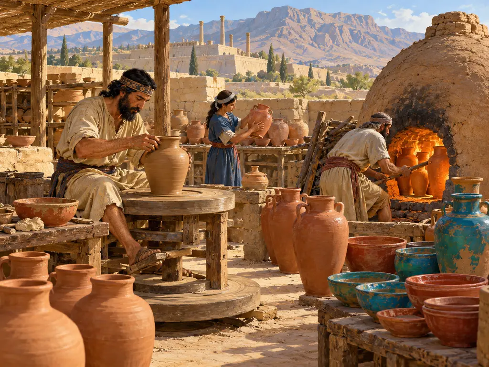
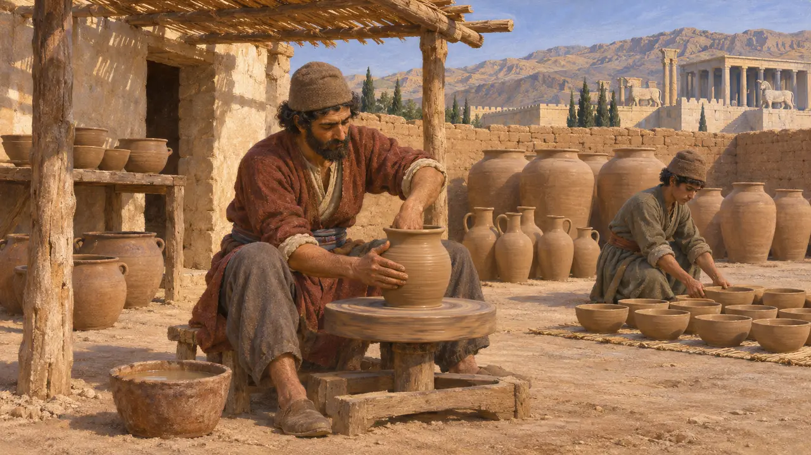
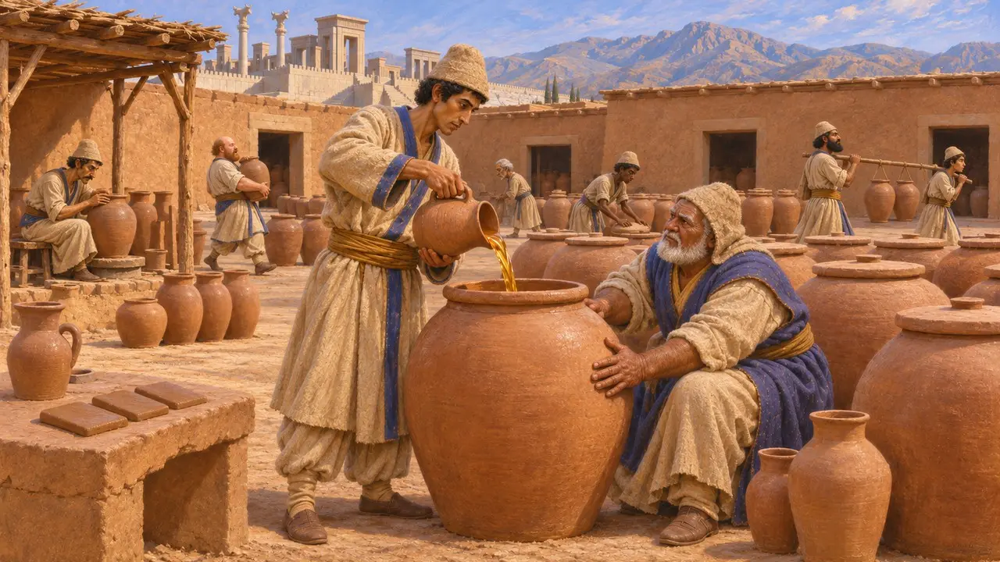
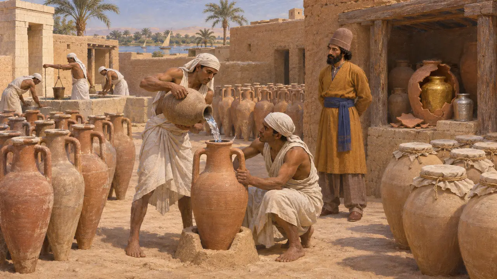
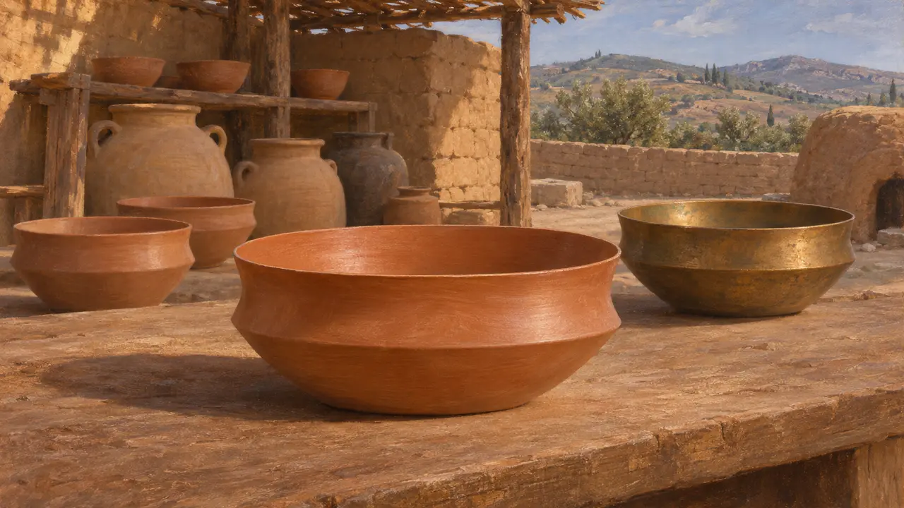

Гончарный двор
Мастерские обиходной и тарной керамики в Персидской державе, VI–V века до н. э.
Гончары изготавливали кувшины, чаши и кружки, без которых не могли обойтись ни одно хозяйство, ни один храм, ни одно царское хранилище. В Персидской державе гончарный круг и обжиговая печь были древними местными ремёслами, продолжавшими жить и при новых правителях, и значительная часть вина, пива и масла державы хранилась и перевозилась в глиняных сосудах.
В игре: Гончарный двор превращает глину в керамику, которая нужна домам с внутренним двором. Игра сводит разнообразное ремесло к одному товару; настоящие гончары делали и большие сосуды для хранения и перевозки вина, пива и масла.

Посуда гончарного круга в царских центрах
Свидетельства эпохиРаскопки в Пасаргадах и Персеполе дали обилие простой керамики, изготовленной на гончарном круге: сосуды для хранения, кувшины, кухонные горшки и миски. Бóльшая её часть скорее утилитарна, чем декоративна, что указывает на местные мастерские, изготовлявшие посуду, нужную строителям, стражникам и придворной прислуге в повседневной жизни. Расписная керамика встречается на этих памятниках редко по сравнению с более ранними периодами на западе Ирана.
D. Stronach, Pasargadae, 1978; E. Schmidt, Persepolis II, 1957

Жидкости в царских счетах
Свидетельства эпохиТаблички Персепольского крепостного архива фиксируют выдачу вина, пива и масла работникам, путникам и чиновникам. Всё это отмерялось в установленных мерах объёма, таких как кварта и марриш. Сосуды в табличках упоминаются редко, но жидкости в таких количествах нужно было где-то хранить и в чём-то перевозить, а глиняные кувшины были самой дешёвой и распространённой тарой. Сами таблички в большинстве своём были из необожжённой глины — знак того, насколько этот материал был основой всего делопроизводства.
R. Hallock, Persepolis Fortification Tablets, 1969

Кувшины с водой для пустыни и золото в глине
Античное свидетельствоГеродот пишет, что винные сосуды, которые дважды в год привозили в Египет из Греции и Финикии, после опорожнения собирали в Мемфисе, наполняли водой и отправляли в безводный край на дороге в Сирию; этот порядок он приписывает персам после завоевания. Он также сообщает, что Дарий хранил дань так: разливал расплавленные золото и серебро по глиняным сосудам, затем разбивал глину и отсекал металл по мере надобности.
Herodotus 3.6-7; Herodotus 3.96

Металлические формы, повторённые в глине
СпорныйТонкая чаша для питья с ребристым перегибом стенки, подражающая металлическим сосудам, распространилась в эту эпоху во многих провинциях — от Анатолии до Иранского нагорья. Историки спорят о её значении: одни видят в ней знак того, что местная знать перенимала придворные обычаи трапезы, другие подчёркивают, что региональные гончарные традиции в основном сохранялись неизменными, а форма расходилась благодаря обычной моде и торговле.
E. Dusinberre, Aspects of Empire in Achaemenid Sardis, 2003
Источники
- D. Stronach, Pasargadae, 1978
- E. Schmidt, Persepolis II, 1957
- R. Hallock, Persepolis Fortification Tablets, 1969
- Herodotus 3.6-7; 3.96
- E. Dusinberre, Aspects of Empire in Achaemenid Sardis, 2003
- P. Briant, From Cyrus to Alexander, 2002